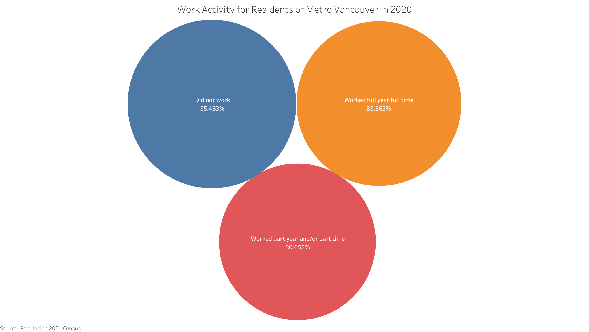

2021 Census Data Analysis#
Based on 2021 Census of Population from Statistics Canada
Metro Vancouver, also known as Greater Vancouver, is the metropolitan area with its major urban centre being the city of Vancouver, British Columbia, Canada. This is a deep-dive analysis for the Metro Vancouver based on the 2021 Census of Population from Statistics Canada.
Population#
Growth of Population#
In 2021, the enumerated population of Metro Vancouver was 2,642,825, which represents a change of 7.3% from 2016, compared to the provincial average of 7.6% and the national average of 5.2%.
Geographic Distribution of Population#
From the map below, we can see that Vancouver, Surrey and Burnaby were the top three populated cities within Metro Vancouver. As a contrast, Belcarra, Lions Bay and Tsawwassen First Nation had the lowest population.
Age Distribution of Population#
In 2021, the average age for population of Metro Vancouver was 41.7, in comparison, for British Columbia and Canada, the average age was 43.1 and 41.9 respectively.
According to the above chart, the 20-39 age group and the 60-79 age group had the fastest growth rate, while the 40-59 age group had a slight decrease.
In 2021, 460,790 persons aged 65 and over were enumerated in Metro Vancouver, representing 17.4% of the total population. In comparison, for Canada, the proportion of seniors was 19% in 2021.
Family Size of Population#
Overall in 2021, nearly half of the families in Metro Vancouver consisted of just 2 persons, which slightly increases in comparsion with the proportion of 48% in 2016.
6.5% of the families in Metro Vancouver consisted of 5 or more persons, compared with 8.3% in Canada. And in 2021, the average size of census families in Metro Vancouver was 2.9, which is the same as the number of Canada.
Immigration#
Immigrant Population#
According to the 2021 Census, 1,089,185 people, that is, 41.8% of the population in Metro Vancouver, were foreign-born (immigrants), 1,384,550 (53.1%) were Canadian-born (non-immigrants) and 133,280 (5.1%) were non-permanent residents.
Among immigrants in 2021, 154,820 came between 2016 and 2021. These recent immigrants made up 14.2% of the immigrant population.
As shown above, the percentage of immigrant population in Metro Vancouver was greatly higher than that in British Columbia and Canada, and slightly increased from 40.0% in 2011 to 41.8% in 2021.
Origin Countries of Immigrants#
In 2021, the top three origin countries of recent immigrants to Metro Vancouver was China (20.2%), India (19.7%) and Philippines (9.8%).
‘Recent immigrant’ refers to an immigrant who first obtained his or her landed immigrant or permanent resident status between January 1, 2016 and May 11, 2021.
Geographic Distribution of Immigrants#
Statistics Canada also breaks down the proportion of immigrants by municipalities. In Metro Vancouver, Richmond toped the list, with about 60.3% of residents identifying as immigrants, followed by Burnaby at 50.4%. In contrast, Langley Township, Langley City, Maple Ridge, Bowen Island and Belcarra had the proportion below 25% as immigrants.
Ethnocultural And Religious Diversity#
Religion#
In 2021, 47.1% of population in Metro Vancouver declared no religion and secular perspectives, considerably higher than the national figure of 34.6%. The top religious group was Christian which represents 33.1% of the total population, and the second group was Sikh representing 8.5% of the total population.
Visible Minority#
In 2021, more than half (54.5%) of the total population in Metro Vancouver was visible minority, compared with 48.9% in 2016. The largest visible minority group was Chinese which represents 19.6% of the total population, the second group was South Asian with about 14.2% of the total population, and the third group was Filipino with about 5.5% of the total population.
Among municipalities in Metro Vancouver, Richmond had the highest percentage (80.3%) of residents belonging to a minority group in 2021. Burnaby was second with 67.8%, followed closely by Electoral Area A and Surrey.
Language#
Official Language#
In 2021, for the official language, about 88% of population in Metro Vancouver could only speak English, and the proportion of French only speakers was just 0.04%, which is obviously lower than the proportion at 11.2% in Canada.
Most Common Languages Spoken At Home#
In 2021, 65.9% of Metro Vancouver’s residents spoke English at home, and only 0.3% of residents in Metro Vancouver spoke French at home, which is significantly lower than the whole Canada where 19.2% spoke French.
Other than official languages, two forms of Chinese Languages - Mandarin and Cantonese, both reached the proportion level above 5%, and the other one language with the proportion above 5% was Punjabi.
Languages used at work#
In 2021, about 95% proportion of workers in Metro Vancouver regularly used English at work, while only 4.7% proportion of workers used non-official languages most often at work.
Indigenous#
In 2021, there were 63,340 Indigenous persons in Metro Vancouver, making up 2.4% of the population in the Metro Vancouver, compared with 5.9% in British Columbia and 5.0% in Canada.
The majority of the Indigenous population reported a single Indigenous identity — either First Nations, Métis or Inuk (Inuit). Of the Indigenous population in Metro Vancouver, 56.8% (35,950) were First Nations people, 38.1% (24,105) were Métis, and 0.8% (515) were Inuit.
In addition to those who reported a single Indigenous identity, 1,695 people reported more than one Indigenous identity and 1,080 were defined as having an Indigenous identity that was not included elsewhere.
Housing#
Type Of Dwelling#
In 2021, there were 1,043,320 occupied private dwellings in Metro Vancouver, wherein apartment (high-rise, low-rise and duplexes) represented nearly 60% of all occupied private dwellings in this region. Single-detached dwellings (single-detached house and movable dwelling) represented 28.1% of all occupied private dwellings in Metro Vancouver, and had the lowest growth rate at 2.2% between 2016 and 2021, while single-attached dwellings had the highest growth rate at 12.2%.
Average Value of Dwellings#
The average value of dwellings continued to increase in Metro Vancouver between 2006 and 2021. In 2021, the average value of a dwelling in Metro Vancouver was $1,304,000, which increased by 29.63% from 2016.
The average value of a dwelling refers to the value of the entire dwelling, including the value of the land it is on and of any other structure, such as a garage, which is on the property. If the dwelling is located in a building which contains several dwellings, or a combination of residential and business premises, all of which the household owns, the value is estimated as a portion of the market value that applies only to the dwelling in which the household resides.*
Tenure#
In 2021, there were 1,043,320 households in Metro Vancouver with a homeownership rate of 62.1%, which changed by -1.6 percentage points from 2016.
Although ownership remained the predominant form of tenure in Metro Vancouver, between 2006 and 2021, the percentage of households who owned decreased and the percentage who rented increased in Metro Vancouver due to the rapidly increased price of dwellings.
Housing Affordability#
In Canada, housing is considered unaffordable if it costs more than 30% of a household’s before-tax income. In 2021, 38.5% of renters in Metro Vancouver spent more than 30% of their income on rent, which was decreased from 43.5% in 2016. In comparison, 24.4% of home owners in Metro Vancouver spent 30% or more of their household income on housing, which was slightly decreased from 25.4% in 2016.

In addition, based on the above table, it is clear that even the average monthly shelter costs for both owned dwellings and rented dwelling increased by more than $300 from 2016, the proportion of unaffordable household still decreased.
Income#
Total Income Of Households#
In 2020, the median total income of households in Metro Vancouver was $90,000, a change of 23.8% from $72,662 in 2015.
More than 75% households in Metro Vancouver had the total income below $150,000 in 2020, wherein about 30% households had the total income belonging to the income group $50,000-$99,999.

According to the above map, we can see that households in both Belcarra and Anmore had the top median total income above $160,000 in 2020, while households in Electoral Area A had the lowest median total income about $64,000.
Number And Median After-tax Income Of Households#
Based on the above graph, Tsawwassen First Nation had the highest growth rate (186.2%) for number of households and the lowest growth rate (6.2%) for median after-tax income of households between 2015 and 2020 at the same time. In addition, Electoral Area A was the only one region with both growth rates above 25%. And the growth rate for number of households in Port Moody was as low as 1%.
Education#
Overall in 2021, 43.2% of population aged 25 to 64 in Metro Vancouver had a bachelor’s degree or higher, compared to 35.0% in British Columbia and 32.9% in Canada.
34.6% of population in Metro Vancouver had a location of study outside Canada, out of those aged 25 to 64 with a postsecondary certificate, diploma or degree. This compares to 26.1% in British Columbia and 20.1% in Canada overall. The most common location of study outside Canada for Metro Vancouver was China.
Labour#
Occupation#
Based on the breakdown of occupations in Metro Vancouver in 2021, Sales and service occupations, Business finance and adminstration occupations, and Trades, transport and equipment operators and related occupations were the top 3 occupations with the highest percentage of employed labour force.
Work Activity#
During 2020, about 65% of population aged 15 years and over in Metro Vancouver worked, wherein about 1/3 of population worked full year full time.

In 2021, the employment rate for population aged 15 years and over in Metro Vancouver was 60%, wherein 8.6% of those participating in the labour force in Metro Vancouver were unemployed, in comparison with 5.8% in 2016. In addition, 16.7% of the employed labour force in Metro Vancouver was self-employed in 2021, compared with 13.3% in 2016.
Commuting#
Mode Of Commuting#
In 2021, driving remained the primary mode of transportation with 74.7% of Metro Vancouver’s employed labour force going to work by car, which is increased from 69% in 2016. In contrast, between 2016 and 2021, the percentage of commuters who used public transit decreased from 20% to 14.9% due to the epidemic.
Commuting Duration#
With more workers went to work by car, the commuting duration is obviously shortened in 2021. According to the graph below, about 55% of the workforce in Metro Vancouver commuted less than 30 minutes, in comparison with 50% in 2016, and about 8% of the workforce commuted 1 hour and over, compared with 11% in 2016.
Place Of Work Status#
In 2021, about 26% of the employed labour force in Metro Vancouver worked from home, which was greatly increased from 8% in 2016 due to epidemic.